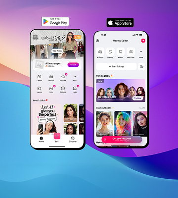

More Projects

Beauty Editor is a real-time photo and video beauty tool designed for everyday creators. It sits at the intersection of powerful AI and effortless simplicity — letting anyone achieve professional-grade retouching in seconds, without learning a single editing technique.
The challenge was designing an experience where the technology disappears and the result feels natural, not filtered.
Existing tools on the market fell into two camps: professional editors like Lightroom that require hours to learn, or filter apps that produce an uncanny, over-processed look. Neither served the growing base of creators who simply want to look like themselves — polished, natural, and confident.
User interviews revealed a consistent frustration: "I just want my skin to look good without looking like I used a filter." People didn't want transformation — they wanted enhancement.
"People don't want to look like someone else. They want to look like the best version of themselves — and they want it in seconds."
We conducted 24 user interviews across beauty enthusiasts, casual selfie-takers, and social media creators. Three pain points emerged consistently across all groups:
83% of users abandoned professional tools within the first session due to overwhelming options and jargon.
Over 70% said existing filters made results look artificial, hurting their confidence rather than boosting it.
91% expected results in under 3 seconds. Any longer and they'd abandon the editing flow entirely.
Users wanted tools that felt personal — adapting to their unique skin tone and features, not a one-size-fits-all solution.
The core design principle was progressive disclosure — show only what's needed, when it's needed. On launch, users see a clean camera view with one tap to apply a smart beauty preset. Advanced controls exist, but they're tucked away until the user is ready.
The AI runs entirely on-device, processing adjustments in real-time without lag — making the experience feel instant and magical rather than computational.
"The best interface is one that makes complex things feel effortless. Every slider, every animation, every transition was designed to feel like the app already knows what you want."
Every feature was validated through usability testing before development began. Features that didn't reduce friction were cut — regardless of how impressive they were technically.
AI-powered smoothing that adapts to each unique skin tone in under 100ms, with zero lag during movement.
Virtual try-on for lip colours, blush, and eye looks — rendered with accurate skin interaction and lighting.
A single tap applies a personalised, natural-looking enhancement tailored to the user's facial structure.
A slide-to-compare gesture lets users see the exact impact of their edits against the original in real time.
Post-launch metrics validated the design decisions. The focus on simplicity and real-time performance directly translated into engagement and retention numbers that exceeded category benchmarks.
App Store Rating across iOS & Android
Average time to first beautiful result
Day-7 retention rate (3× category average)
The biggest learning from this project was the danger of designing for edge cases too early. We spent two weeks designing an advanced colour correction module that only 4% of users ever touched. That time could have gone into polishing the core single-tap experience.
Going forward, I default to ruthless feature prioritisation: if a feature doesn't serve the primary user goal, it waits. The product is better for it.